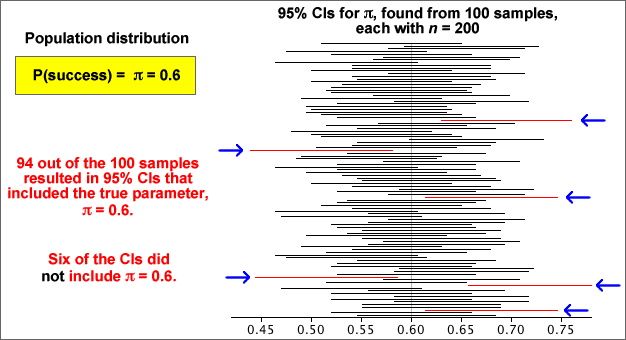

Properties
As with all other confidence intervals, a 95% confidence interval for a population proportion, π, is random. Although it correctly includes π in 95% of random samples, there is a 5% probability that it will not include the true value of π.
The simulation below took 100 random samples of size n = 200 from a population with π = 0.6. Most of the confidence intervals included π = 0.6, but some did not. If the simulation was repeated many more times, the proportion including 0.6 would be close to 0.95.

In practice, you only have a single sample and a single confidence interval, but we have "95% confidence" that it will include the true (and usually unknown) value of π.
Problems with small sample sizes
This confidence interval for π was based on a normal approximation to the distribution of the sample proportion. If the sample size, n, is small or π is close to either 0 or 1, this normal approximation is inaccurate and the confidence level for the interval can be considerably less than 95%.
Many textbooks give the following guideline for using the confidence interval:
Only use the confidence interval for π
when all of the following hold...
|
These guidelines can be relaxed a little provided you accept that the confidence level may be a little less than 95%.